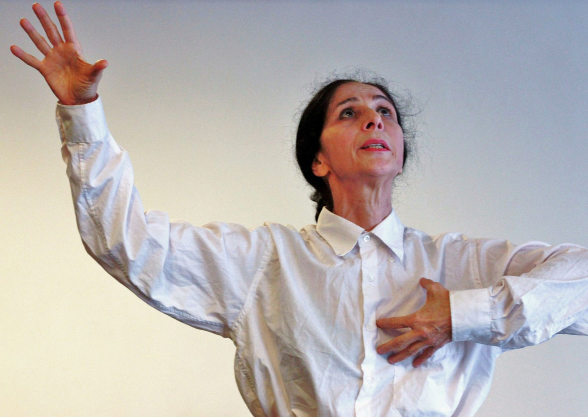

Espetáculo "Das Tripas: Sete Histórias" Chega à Oficina Cultural Oswald de Andrade, Inspirado na Obra de Ezter Liu

Descubra a magia da dança-teatro com "Das Tripas: Sete Histórias", um espetáculo envolvente dirigido por Clara Carvalho e estrelado pela talentosa atriz Mariana Muniz. A produção, que investiga o universo dos contos da renomada autora pernambucana Ezter Liu, promete uma experiência única na Oficina Cultural Oswald de Andrade.
Inspirado no aclamado livro "Das Tripas Coração", que rendeu a Ezter Liu o prestigioso V Prêmio Pernambuco de Literatura em 2018, o espetáculo traz à vida contos marcados pela temática feminina, expandindo-se em narrativas cênicas poderosas. As histórias, repletas de peripécias inusitadas e concretas, convidam o público a imergir no universo poético da dança-teatro. A autora destaca que alguns contos surgiram puramente da imaginação, enquanto outros têm raízes mais empíricas, mas sempre mantendo uma narrativa envolvente e autêntica.
Além de proporcionar uma experiência cultural única, "Das Tripas: Sete Histórias" oferece ao público jovem e amante das artes cênicas a oportunidade de explorar as experimentações e processos criativos da Cia Mariana Muniz de Dança e Teatro. O espetáculo surge a partir de perguntas instigantes sobre a interseção entre movimentos dançados e palavras faladas na construção de uma narrativa coesa.
A temporada deste espetáculo inicia em 21 de fevereiro e se estende até 26 de fevereiro na Oficina Cultural Oswald de Andrade. As apresentações acontecem de quarta a segunda-feira, às 19h, com uma sessão especial no sábado às 18h. A entrada é gratuita, e os ingressos podem ser retirados na bilheteria do espaço com uma hora de antecedência. Não perca a oportunidade de vivenciar a magia dessas sete histórias entrelaçadas em uma experiência artística envolvente.